This bot is responsible for tracking players in the game Tom Clancy's The Division2 or Division2.
It responds to the command:
/dthInitially you might find yourself lose, no worries, just give it a try, run: /dth
This is the bot replying to you and telling you that you use run: /dth help, as it requires a sub
commmand from the "dth" stack.
/dth help command, provides you with everything you need to know to get yourself started. It will
showcase every command available to you.

/dth about command provides you with information on who buiilt the system and what tech stack the
system
uses.
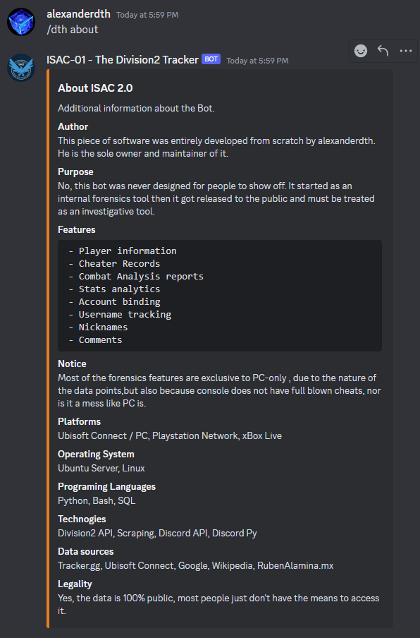
/dth faq command provides a convenient way to list information about ISAC, what people are curious
about, the rules and more. Its contents are frequently updated so the image below, might not reflect it's
current
state.

/dth active-players is a command which outputs a rough estimate of active players, based on local
data.
It's not accurate, we know, but, it's the closest thing you got for Division2, in terms of online players.

/dth username-check <insert-platform> <insert-username> provides you with an easy way to
see
if the username you want to change to is available or not. As a general idea, the platform can take 3 values:


/dth subscription will display subscription information related to ISAC. As a general idea, ISAC is
free
to use in it's official discord. But, in order to use it in a private server, you will have to have an active
trial
or subscription.
This command can be ran in 2 places:


/dth daily-loot command, will showcase today's targeted loot.
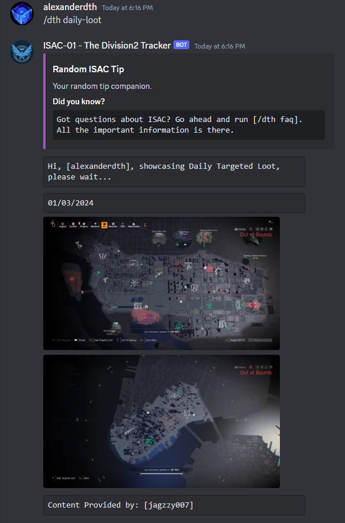
/dth analyze is a command which attempts to use local data in order to perform static analysis
between
username changes. In pther words, every time someone changes name, their account information is logged and it's
bound together by something called uplay id. This ID is unique and cannot be change. It's what
allows
the system to store username changes and bind data. Leaving this explanation asside, we can use the account
snapshots to calculate differences in between them. The command can be used in 2 pars:
/dth analyze <insert-player-here>, this will run it on a given player./dth analyze me, this will analyze it for youself, assuming you have an ISAC Profile
registered.
Examples:


/dth compare <insert-first-username> <insert-second-username> will atempt to compare 2
accounts, calculate a score and simply determine which score is higher. The score consists of headshots,
bodyshots
and crits. Of course, headshots have a 0.2 modified, since they require more skill. Example:

/dth generate-password is a handy command which generates Ubisoft Compliant secure passwords. (WE DO
NOT
STORE ANYTHING, the bot doesn't know if you chose a password or not). The command accepts one single argument
which
is optional, that is, password length. By default, Ubisoft requires a password which contains a maximum of 16
characters. You can generate a password with a length with up to 30. /dth generate-password 30.
Example:

As you can see it generates an extremely secure password that is almost impossible to crack and is Ubisoft Compliant.
/dth generate-username will attempt to randomly generate a list of 16 usernames, by default. You may
generate a maximum of 30 per execution by doing /dth generate-username 30. Example:
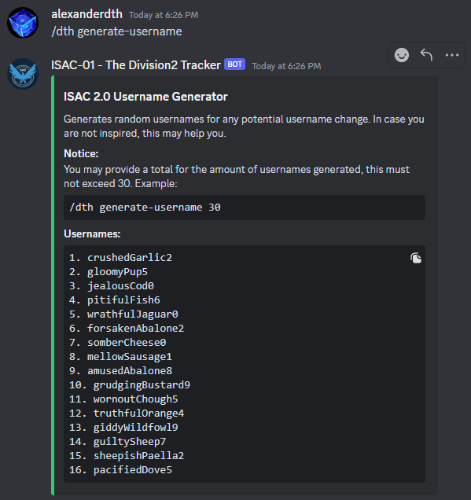
/dth user-merits is a command that showcases ISAC's merit system. The system has 2 types of merits:
In terms of custom merits, you will see "Cheater Companion or Cybersherlock", the most predominant ones.
It's important to explain that ISAC's merit system is found on every ISAC profile, right under
Listed Merits

Running /dth user-merits will output:

/dth register -u <insert-username> -p <insert-platform> -n <insert-nickname>, will
enable you to create an ISAC profile, which is bound to your Discord Account. This will enable you to track
yourself
and perform self-analysis. Here's how you can use it:
/dth register help first, to see the helper:
-u <insert-username>, requests your in-game username-p <insert-platform>, requests your platform. This can take one of the following values:
uplay for pc, psn for PlayStation and xbox for XBOX Live.
-n <insert-nickname>, requests your nickname. You can set any nickname you want.What's important as well is that, you can create 3 profiles. One for every platform.
Now, let's try an example and see how it works:
/dth register -u lmao-b -p uplay -n alexanderdth

/dth unregister -u <insert-username> -p <insert-platform> will allow you to wipe your
data.
Simple and effective. It's the opposite of the command found above. Follow the same logic.

/dth me is a command which pulls your account information based on a profile you created using the
above
steps. So, you have to have a profile registered for this to work.
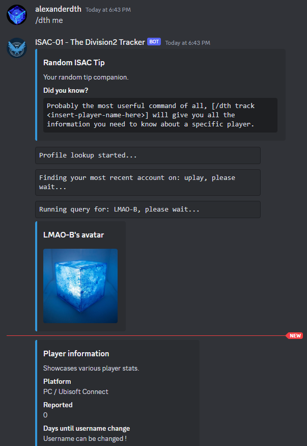
/dth track <insert-username-here> is without a doubt the most popular command. It pulls data
straight from Ubisoft's servers, passes it through our algorithms, saves it and then finally, serves it to you.
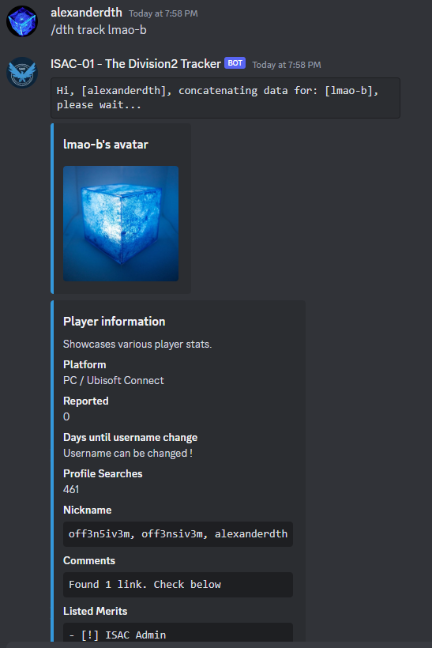
/dth search <insert-keyword> is basically ISAC's own version of Google. Since ISAC stores it's
data in a database, it makes it possible for users to search for it. This is useful in case you do not remember
a
name, you're lazy or you simply want to explore what you can find. It requires a simple keyword. Contrary to
/dth track <insert-username-here>, it does not require the EXACT username, instead, you
provide
it with a keyword. Example:

There is an additional parameter which you can send it, --legacy. ISAC has a built-in method from
grabbing older usernames. Some proviles have something listed on them that reads
Legacy / Pre-ISAC Usernames. This is essentially a list of really old names auto-grabbed. You can
"force" ISAC to search the database, based on these names.
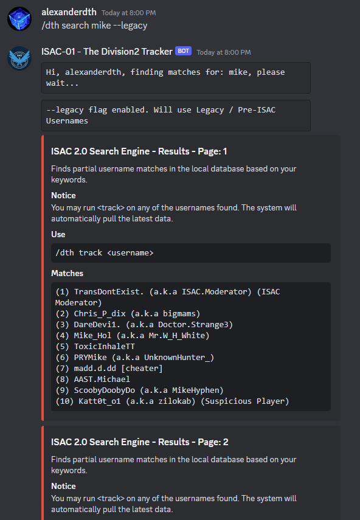
We do support consoles to some extend, hence we have 2 endpoints to use for consoles. They are:
/dth psn track <insert-username-here>/dth xbox track <insert-username-here>Keep in mind, since xbox contains usernames with spaces, you will have to encapsulate your username in between "". In other words:
/dth xbox track "i am player 123"/dth history is a command which allows you to keep track of who you searched for. It's a feature
that is
not widely used, but know this, it's there. You may also specify the optional paramter console, in
order to pull information.
Examples:


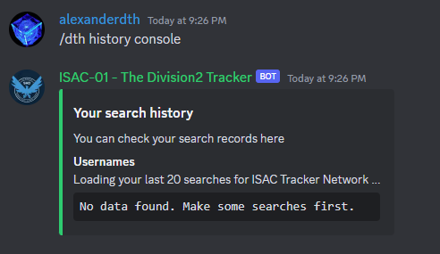
/dth watchlist is another obscure, but very powerful command. It's purpose is simple: store players
on
your personal watchlist. It's like your personal storage space. If you got people you want to keep an eye on,
drop
them in the watchlist.
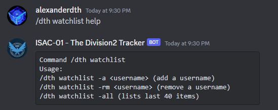
You got a limit of 40 usernames you can store on your watchlist. It's usage is very simple:
-a <insert-username>, adds a player-rm <insert-username>, removes a player-all, lists your playersNow, let's give it a try, let's add a player:

Let's list our items:
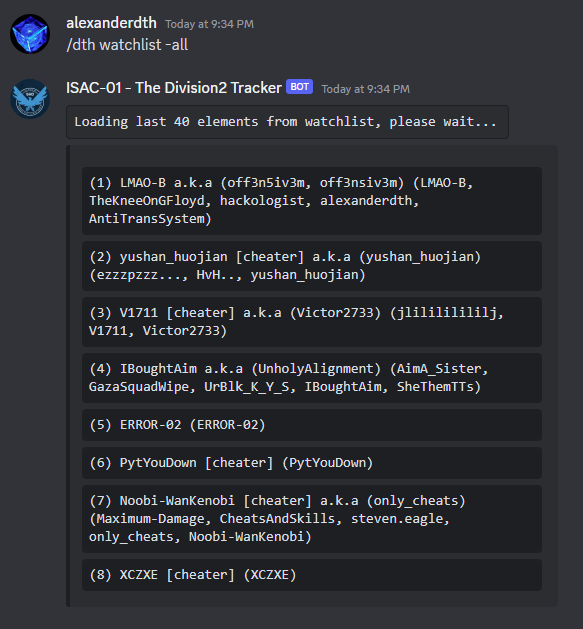
Finally, let's wipe a record:
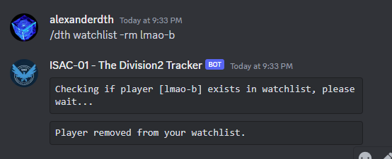
As you can see, the functionality is very easy to use. The information displayed includes
/dth report is the command you want to use, if you want to send us evidence. It requires a few
parameters, but we'll walk you through it. Go ahead and run /dth report help.

The paramters required for running this command:
-u <insert-username>, provide the username-l <insert-proof>, provide the proof. Put your input in between "", if you got
multiple links to send-d <insert-description>, provide the description. Put it in between "", if you
want
to send multiple wordsNow, lyour input should look like this:
/dth report -u lmao-b -l "youtube1 youtube2 youtube3" -d "this user is cheating his ass off"
You can also find the full example when checking the command helper.
/dth vendors is a really cool and useful commands. It uses data provided by RubemAlamina.mx in order
to
perform vendor listing and searching. The command is very rich in features so pay attention.
Let's run it: /dth vendors help. This will display the helper that you see bellow:
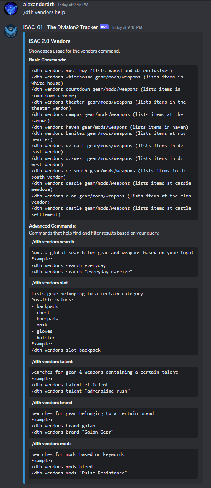
Don't be scared, I know it looks overwhelming, but once you use it a few times, it will feel like nothing.
There are multiple subcomands that you can use:
/dth vendors must-buy -> This will return items that ISAC deems important. This includes:
All
exotics, All DZ Exclusives and All Named ItemsNow we can dive into vendor locations, these vendor locations have 3 gear categories: gear, weapons and mods.
Logically, it looks something like this:
/dth vendors <vendor-location> <gear-type>Vendor locations:
Ger Types:
Now, let's combine a random location with some random gear type. Say, we wanna see what gear is to sale at the castle vendor:
/dth vendors castle gear -> In this example we replaced <vendor-location>
with castle and <gear-type> with gear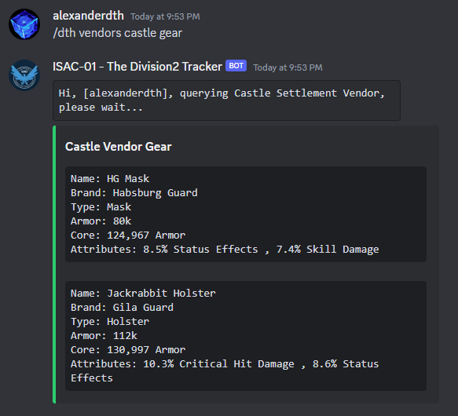
Let's see what weapons are found at the whitehouse vendor:
/dth vendors whitehouse weapons -> Same as above, we replaced the location and the gear
type.
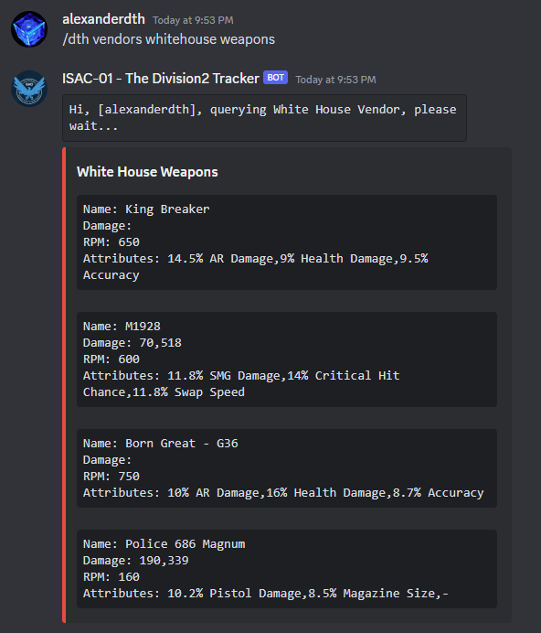
We know how annoying expertise and optimization can be, for that, we can also filter by item slot:
/dth vendors slot <insert-slot-here>Valid slots:
Let's put it to the test, let's try to find some gloves:
/dth vendors slot gloves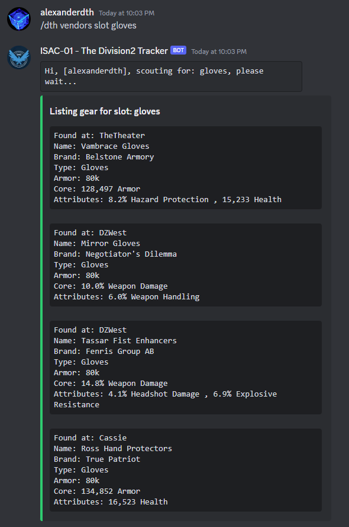
Now we can move on to vendor searching. It's sort of like Google, but for vendors. Vendor searching
searches by gear / weapon name AND NOT BY brand or TYPE or
SLOT.
We got commands for these as well. The command looks like this:
/dth vendors search <insert-keyword>Let's search for EveryDay Carrier:
/dth vendors search everyday/dth vendors search "everyday carrier"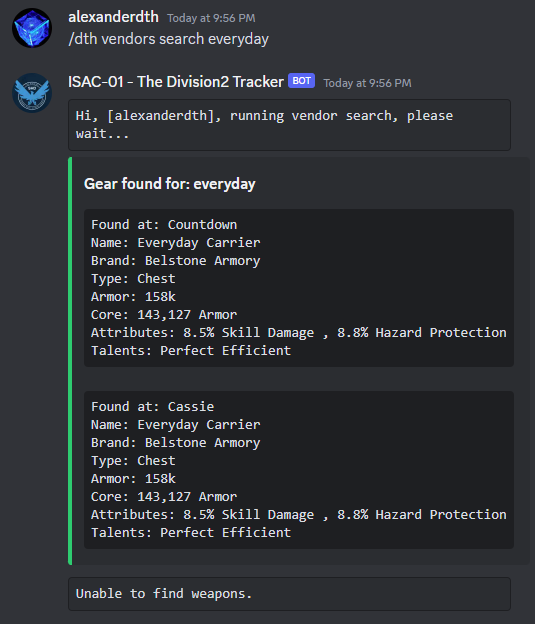
Let's find a weapon:
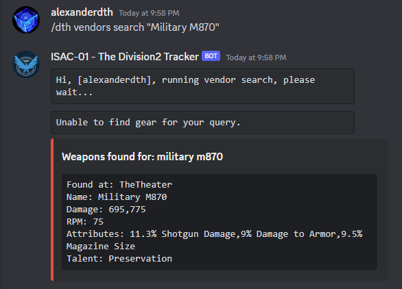
We can also search for weapons / gear that have some talent you need:
/dth vendors talent <insert-talent-name>Say I want to find something with "efficient" on. No problem:
/dth vendors talent efficient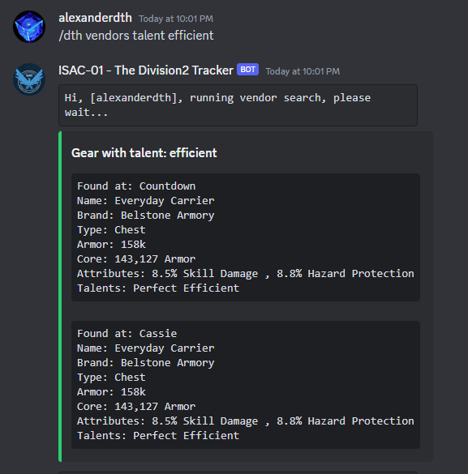
Brands you say? Say no more, we got it as well. If you wish to find gear that belongs to a certain brand. The command looks like this:
/dth vendors brand <insert-brand-here> -> The requested parameter can be a simple
keyword
such as badger or the full thing: badger tuffLet's give it a try:
/dth vendors brand "badger tuff"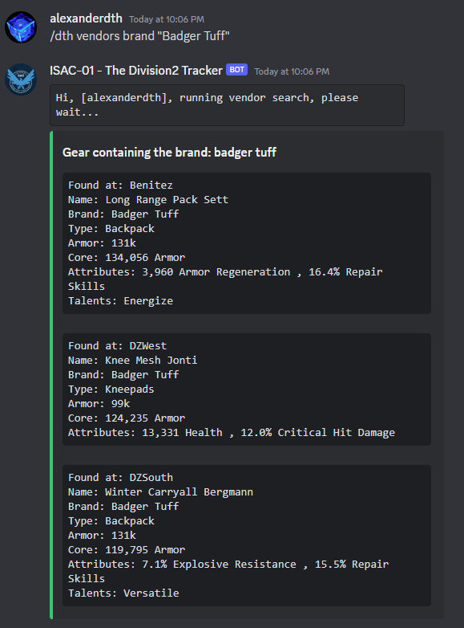
Say I want Fenris, now:
/dth vendors brand fenris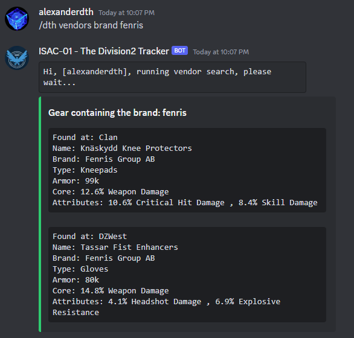
Quite easy. Now we land to our last category: mods. The command is simple and it requires just a
keyword:
/dth vendors mods <insert-keyword>For example, say I need some skill haste mods:
/dth vendors mods "skill haste"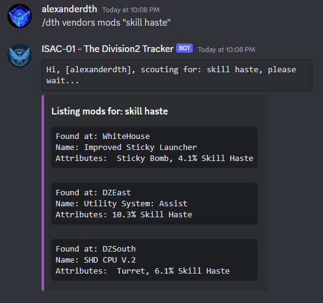
Let's see if there are some pulse mods:
/dth vendors mods pulse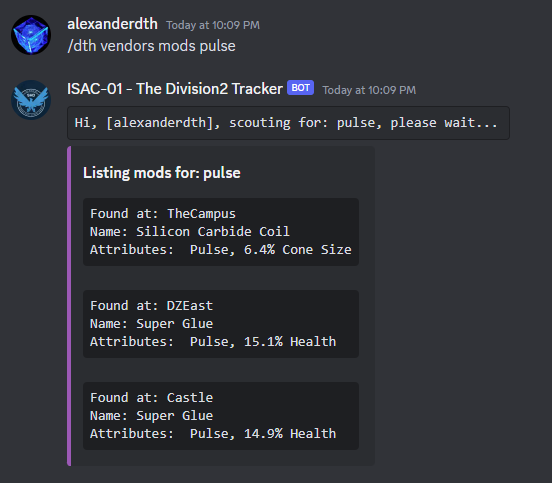
/dth ubisoft-report <insert-cheater-here>, is a command that came later this year. It's
purpose is
to use the data we have on cheater and submit it directly to Ubisoft. Basically, you do not have to login to
Ubisoft, create a ticket, paste data, write stuff and so on. It does it for you in 2 seconds.
The conditions for this are simple:
Let's put it to the test:
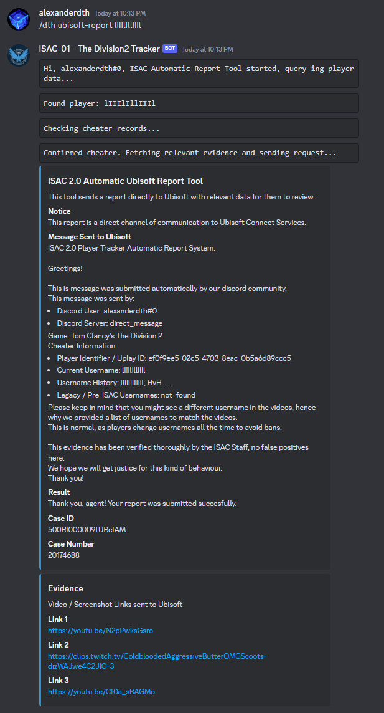
That's it.
Your reached the summit. Don't hasitate to open this documentation whenever you feel lost. Remember:
EVERY COMMAND cand be SUFFIXED with help. Meaning that the command itself
will tell you what to do.